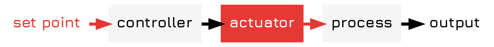

Making Control Block Diagrams in DOT
Table of Contents
Introduction
Control diagrams are vitally important for modeling the interaction of various control systems, but at the same time drawing them is often a bit of a pain. You either have to fire up \(\displaystyle \LaTeX\) which always sucks the joy right out of every room it is contained in or you have to.
Styling Setup
This is styled according to the color schemes in my Control Block Diagram Syntax document. There is no official standard for control block diagram syntax coloring (or, indeed, much of the design of control diagrams), so I decided to create my own little approach for this blog. If you want to use it, feel free to do so.
Basic Control Diagram
A basic control diagram representing the output of a system might be drawn as follows:
digraph feedfowards { splines=ortho; size="15,15!" fontpath="~/.local/share/fonts" node[shape=record, fontname="Jura Bold" penwidth=0, style=filled, fillcolor="#f5f5f5"] edge[penwidth=3] sp[fillcolor=white, label="set point", fontcolor="#e53935"] out[fillcolor=white, label="output"] actuator[fillcolor="#e53935",fontcolor=white] { rank=min; sp->controller[color="#E53935"] controller->actuator actuator->process[color="#e53935"] process -> out } }
Which will output:

Here there are a few tricks. To indicate an input (or indeed an output) to the control system we use an arrow coming in without a box. To give it a nice color scheme we also adjust
A more complex system might look like this:
digraph feedback { splines=ortho; size="15,15!"; fontpath="~/.local/share/fonts"; node[shape=record, fontname="Jura Bold" penwidth=0, style=filled, fillcolor="#f5f5f5"]; edge[penwidth=3]; { node[fillcolor=white, fontcolor="#e53935"]; disturbances; sp[label="set point"]; } out[fillcolor=white, label="output"]; conn[shape=point, fillcolor="#000000" penwidth=3]; comp[shape=circle,label="Σ"]; actuator[fillcolor="#e53935", fontcolor=white]; { rank=min; disturbances} { rank=same; sp->comp[color="#E53935"] comp->controller controller->actuator actuator->process[color="#e53935"] process -> conn [arrowhead=none] conn -> out } { rank=max; sensor; } disturbances-> process[color="#e53935"] conn->sensor sensor->comp }
Which outputs this:
Here some further tricks are used. FIrst we specify the top and bottom of the diagram using anonymous sub-graphs, which are ranked min and max. Sections in-between those are ranked the same, and added in the order of their appearance. This ensures that the graph is, in the 3 layer case, will align properly and produce the right output.
Subgraphs can also be used to restrict the scope of style choices, allowing you to reduce the amount of code you have to write for specific style choices.
We can also draw a simple multi-loop control model as follows:
digraph multi_loop { splines=ortho; fontpath="~/.local/share/fonts" node[shape=record, fontname="Jura Bold" penwidth=0, style=filled, fillcolor="#f5f5f5"] edge[penwidth=3] out[fillcolor=white, label="output"] actuator[fillcolor="#e53935",fontcolor=white] {// style for connectors in diagram node[shape=point, fillcolor="#000000", penwidth=3]; conn; conn2; } { // style for comparators node[shape=circle, label="Σ"] comp; comp2; } { // style for set points node[fontcolor="#e53935", fillcolor=white]; sp[label="set point"]; disturbances } {// style and layout of layer labels node[shape=point, penwidth=0]; edge[color=white] a->b->c->d } {rank=min; a; disturbances} { rank=same; b; sp->comp[color="#E53935"] comp->controller controller -> comp2 comp2->controller2 controller2->actuator actuator->process[color="#e53935"] process -> conn [arrowhead=none] conn->conn2 [arrowhead=none] conn2 -> out } {rank = same; c; sensor2;} {rank=max; d; sensor;} conn->sensor2 sensor2->comp2 disturbances-> process[color="#e53935"] conn2->sensor sensor->comp }
Here we use a bit of a trick to actually make it work, defining a series of "layer labels", which we then include in the groups to get them to align properly.